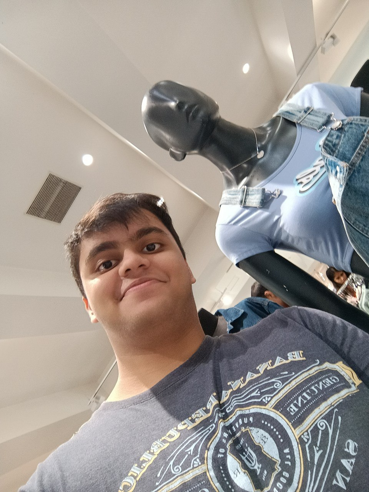

I’m Rushil Raj, a first-year student at RVITM, and I’m passionate about coding. I’ve always enjoyed solving problems, and programming gives me the perfect platform to do that. Currently, I’m exploring different languages like Python and Java, and I hope to work on exciting projects that combine creativity with logic.
When I’m not coding, you’ll probably find me playing video games. I love how games bring together strategy, quick thinking, and teamwork. Whether it's competitive multiplayer or story-driven games, I enjoy the thrill of figuring out the best way to win. For me, gaming is a great way to relax and recharge after a long day.
Apart from tech and gaming, I’m really into fitness. I’ve been going to the gym regularly since starting college, and it’s something I look forward to every day. It not only helps me stay in shape but also keeps me mentally sharp and disciplined. Hitting new personal records is always a great feeling!
I’m also a big fan of sports, especially table tennis, cricket, and badminton. Playing these sports gives me a break from screens and a chance to stay active. Whether it’s a casual game with friends or something more competitive, I love the energy and fun that comes with each match. Plus, it's a great way to bond with others!
